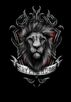
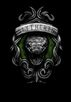
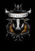

Gryffindor
Su fundador es Godric Gryffindor.
Sus colores son: Escarlata y Dorado.
El animal que la representa es un Leon.
Esta casa esta relacionada con el elemento "fuego" ya que su
sala comun se encuentra en una de las torres del castillo
simulando que cuando hay fuego este va hacia arriba.
Su entrada esta en uno de los retratos del castillo,
especificamente el de la señora gorda.
Esta casa valoraba a los alumnos mas VALIENTES.
El fantasma de la casa es Nick casi decapitado.
La reliquia de esta casa es la espada de Godric Gryffindor
En el gran contador de las casas los puntos de esta se cuenta
con rubies.
Minerva Mcgonagall es la jefa de esta casa y tambien es profesora
de transformaciones.

Slydering
Su fundador es Salazar Slytherin. Sus colores son: Verde y Plateado
El animal que la representa es una serpiente.
Esta casa esta relacionada con el elemento agua ya que su sala
esta ubicada en las mazmorras y tienen vista al lago negro.
Su entrada esta ubicada en un muro de piedra y se debe decir
una contraseña.
Esta casa acepta solo a los alumnos de sangre pura y mestizos
ya que se considera que esta casa valora la AMBICION y el PODER
El fantasma de la casa es el baron sangriento.
La reliquia es el guardapelo de Salazar Slytherin
En el gran contador de las casas los puntos de esta casa se cuentan
con esmeraldas.
Severus Snape es el jefe de esta casa y profesor de pociones,
aunque tambien logra se profesor de artes oscuras y Director de
Hogwarts.
Ravenclaw
Su fundaora es Rowena Ravenclaw.
Sus colores son: Azul y Plateado en las peliculas aunque en los
libros sus colores son Azul y Bronce
El animal que la representa es un Cuervo,y no un aguila como se creia
ya que al traducir el nombre de la casa significa "Garra de Cuervo"
Esta casa esta relacionada con el elemento Aire ya que su sala
comun se encuentra en una de las torres mas altas del castillo.
Para entrar a la sala comun debes resolver un acertijo y este
cambia cada tercer dia.
Esta valora a sus alumnos por su INTELIGENCIA
El fantasma de la casa es la dama gris.
La reliquia de la casa es la diadema de Rowena Ravenclaw.
En el gran contador de las casas los puntos de esta se cuenta
con zafiros
Filius Fitwick es el jefe de esta casa.

Hufflepuff
Su fundadora es Helga Hufflepuff
Sus colores son: Amarillo porque esta relacionado con el trigo
y Negro porque esta relacionado con la tierra.
El animal que la representa es el Tejón.
Esta casa esta relacionada con el elemento tierra ya que su sala
comun esta casi al nivel del suelo.
Su entrada esta en la cocina y entras golpeando un barril.
Esta casa aceptaba a cualquier alumno que alguna de las otras
casas no quisiera.
El fantasma de la casa es el Fraile Gordo.
La reliquia de la casa es la copa de la fundadora.
En el gran contador de las casas los puntos de esta se cuenta
con diamantes.
Pomona Spraut es la jefa de esta casa y tambien maestra de
herbolagia.